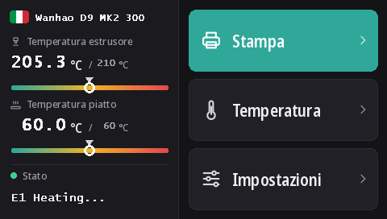

Flashare il touchscreen della Duplicator 9
Tutte le D9, dalla MK1 alla MK3, hanno lo stesso touchscreen DWIN T5 (480 × 272). Con questi firmware esegue DGUS Reloaded 2.0, la nostra nuova interfaccia in 16 lingue, che si flasha da una scheda microSD.
Scarica DWIN_SET.zip (DGUS Reloaded 2.0)
Cosa porta DGUS Reloaded 2.0
- 16 lingue: English, Français, Deutsch, Español, Italiano, Português, Nederlands, Polski, Türkçe, Русский, العربية, हिन्दी, 中文, 日本語, 한국어, Bahasa Indonesia. Tocca la bandiera accanto al nome della stampante nella schermata principale per cambiarla; la stampante ricorda la scelta.
- Una pagina per il sensore filamento: Impostazioni → Filamento → Sensore filamento. Vedi Sensore filamento.
- Una riga di stato che resta: l'ultimo messaggio, per esempio Ready, rimane sullo schermo invece di sparire dopo 30 secondi.
- Indicatori di temperatura per l'ugello e il piatto, con il valore impostato segnato.
- Un nuovo aspetto per ogni pagina: tema scuro, pulsanti più grandi, pittogrammi nei popup.

1. Formattare la scheda microSD
- Windows: spesso Windows 11 non formatta in FAT32; usa GUIFormat e imposta la dimensione dell'unità di allocazione a 4096.
- Linux:
sudo mkfs.fat -F 32 -s 8 /dev/sdX1(prima controlla il dispositivo conlsblk). - macOS:
sudo newfs_msdos -F 32 -c 8 /dev/diskN(controlla condiskutil list).
2. Copiare i file
Estrai DWIN_SET.zip e copia l'intera cartella DWIN_SET nella radice della scheda.
3. Flashare
- Spegni la stampante e scollegala dalla presa.
- Apri la parte anteriore della base per raggiungere il retro dello schermo, dove si trova il suo slot microSD.
- Inserisci la scheda e accendi. Lo schermo mostra l'aggiornamento entro 10-30 secondi; aspetta che si riavvii normalmente, da 1 a 3 minuti in tutto.
- Spegni, togli la scheda, richiudi la base.
Il video di Wanhao sull'aggiornamento dello schermo della D9 mostra dove si trova lo slot.
Da dove viene
DGUS Reloaded 2.0 ridisegna pagina per pagina DGUS Reloaded 1.0.3 (di Desuuuu, poi Neo2003). I sorgenti, il programma che genera i file dello schermo e le traduzioni sono su GitHub. Una parola sbagliata o goffa nella tua lingua? Diccelo su Discord o apri una issue lì.
Per tornare a DGUS Reloaded 1.0.3, per esempio con un firmware più vecchio della v2.0.9, flasha DWIN_SET_1.0.3.zip allo stesso modo.
Tornare allo schermo Wanhao
Il firmware dello schermo Wanhao funziona solo con il firmware Wanhao della scheda madre. MK1: il file dello schermo della versione corrispondente nella pagina MK1. MK1 + kit, MK2 e MK3: DWIN_SET_MK2.zip. Stessa procedura.